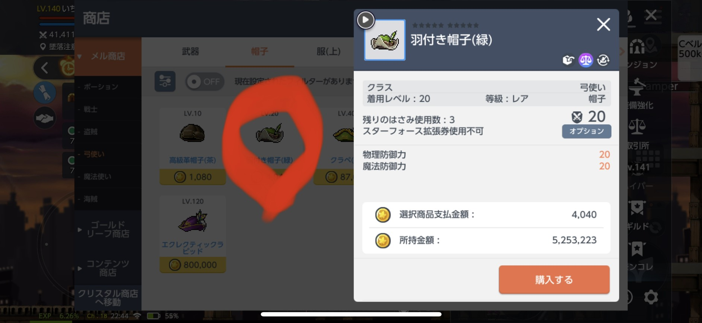
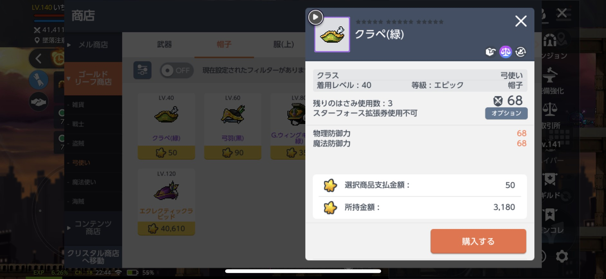

<!DOCTYPE html>

<html lang="ja">


<head>
   <meta charset="utf-8">
   <title>メイプルストーリーm 初心者による装備強化について</title>
   <link rel="stylesheet" href="./bass1.css">

</head>


<body>

   <header>
      <h1>初心者けん坊のメイプルm攻略</h1>
      <div>
         <P>
            <a href="./index0.html">Topページへ</a>
         </P>
         <p>
            <a href="./index2.HTML">装備強化2ページへ</a>
            <a href="./index3.HTML">装備強化3ページへ</a>
         </p>
      </div>
   </header>


   <h1>メイプルストーリーM 装備強化</h1>

   <P>初心者により誤った情報を提供している可能性あります。責任は取れませんご了承ください。</P>
   <br> ＊2021年7月24日の情報を元に作成しています。
   <br>けん坊の情報不足により記載できていない項目があります。長時間かけて更新しますしばらくお待ちください。
   <br>（潜在能力、追加能力、魂の装備、紋章強化、呪文書）
   </P>


   <h2>スタフォ強化</h2>
   <p>武器や防具などのスターフォースあげることができます</p>

   <p> ・メリット
      <br>スターフォスフィールドで狩りができる(狩場に応じたスターフォスレベルが必要)
      <br> 特定の防具やアクセサリーはスターフォスのレベルに応じた能力を得ることができる

   </p>

   <p>・デメリット
      <br>装備のレベルが高いとメルを大量に消費する
      <br>スターフォースレベルが一定数上がるごとに次のスターフォースレベルあがる確率が下がること

   </p>

   <p>・おすすめ
      <br>序盤はメル商店で安い防具をスターフォース10まで上げるのがおすすめ(安い)
   </p>
   <!-- コインショップの写真 -->
   
   <p> ある程度キャラレベルが上がりもっとレベルの高いスターフォースフィールドで狩したい時・・・
      <br>ゴールドリーフ商店で安い防具（エピック）購入！！
   </p>
   <!-- ゴールドリーフ商店の写真 -->
   
   <p>この場合はMAXスターフォース15まで強化可能！！
      <br>＊スターフォース10越えると破損する可能性が出てきます
      <br>強化して、破損して直して、強化しての繰り返し！！(装備と時間かかります）
   </p>
   <a href="#aaa">破損した時は伝承（装備修復）</a>


   <p>・運試し
      <br>スターフォースレベル星24から25への強化 ＊成功確率1％
      <br>セーフティーとプロテクトの書は使用、ラッキーデイの書やスターキャッチ成功の+5%は使ってません
      <button type="button" onclick="kyoka()">強化する</button>
   <P>
      強化結果
   </P>
   <p id="text"></P>


   <h3>潜在能力</h3>
   <p>追加の情報をお待ちください</p>

   <h4>伝承（装備修復）</h4>
   <p id="aaa"></p>
   <p>伝承（装備修復）ではスタフォ強化で壊れた装備を修復することができます。修復する際の注意点は修復に費やした素材の追加能力の効果とうは消えることです。

      <br>＊伝承（装備修復）には特定の同一（名称や装備等級等）な物か装備修復の書が必要です


   </p>


   <script src="./サンプルコード.js">

   </script>

</body>


</html>